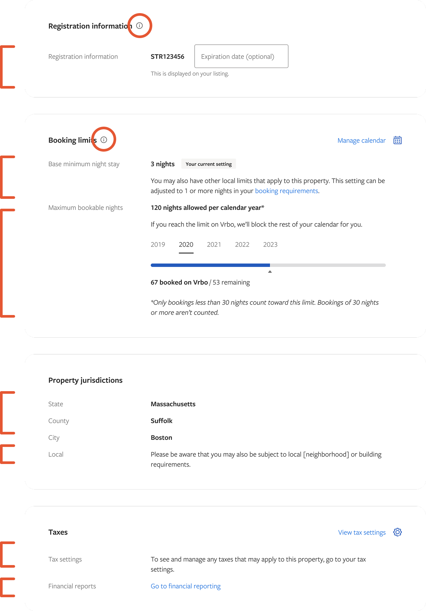
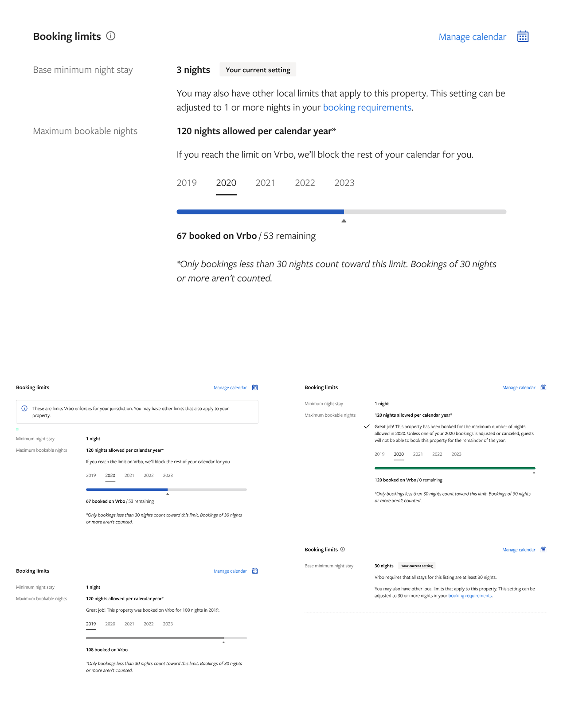
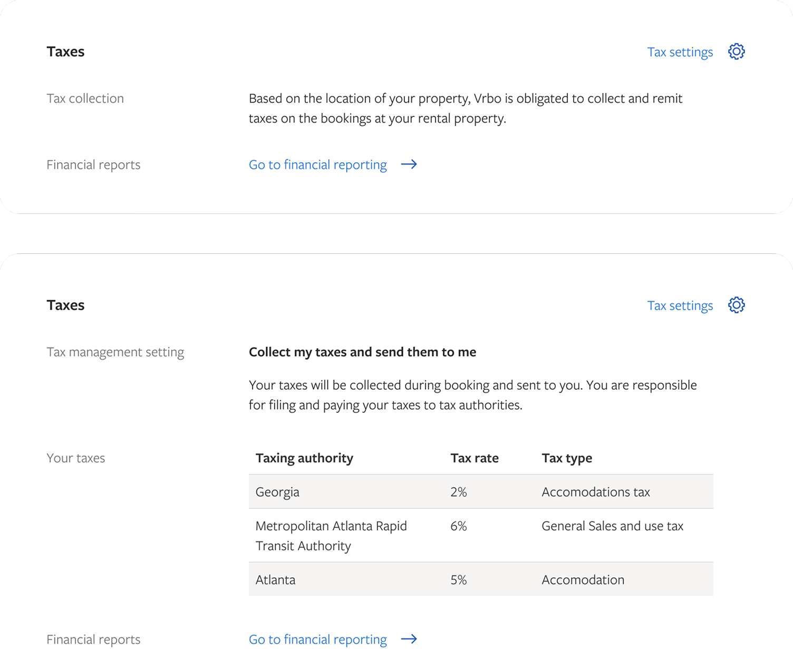
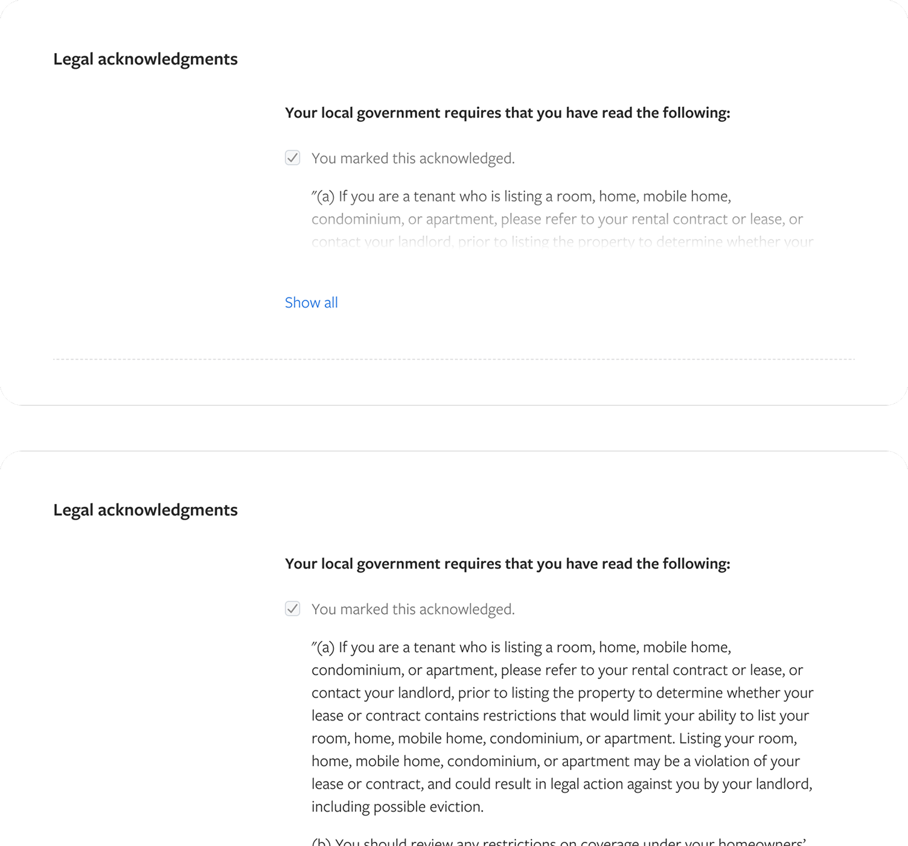
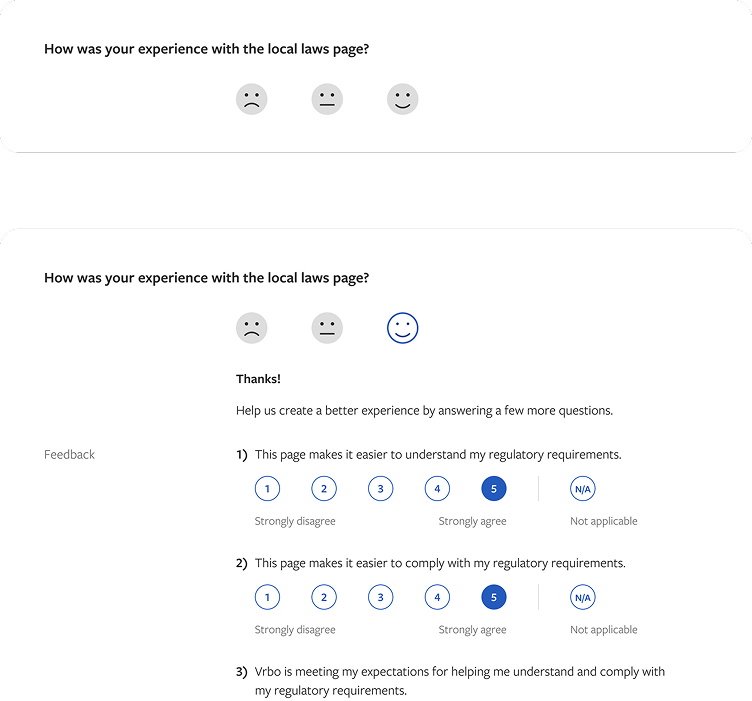
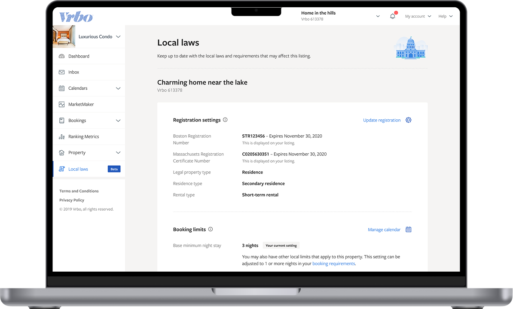

A complex regulatory & systems problem
Making complex regulatory compliance clear, actionable, and iterable for hosts — a modular system paired with a real-time feedback loop.
A component-by-component modular page built for maximum flexibility across thousands of jurisdictions — so every host sees exactly what rules apply to their property and can act on them.
“I didn’t know my city requires a 30-night minimum.”
“Why is Vrbo blocking my calendar?”
“Taxes are confusing — am I collecting them or not?”— Host feedback
Resulting in: frustrated hosts, increased support tickets, compliance risk, and lost revenue.

The most complex component we solved. Shortly after launch, our feedback tools surfaced confusion around the booking limits component.
Within a few weeks we updated the component based on that feedback — and users immediately stopped feeling the need to comment on this section.
How we listened: Opinion Lab, Slack integration, and session-replay recordings.

Multiple tax options paired with smart registration flows that adapt to each property’s jurisdiction.

Jurisdiction context (country, state, county, city, plus local notices) paired with required legal acknowledgments.

“Quickly proved itself within the first few weeks of launch — allowing us to iterate, improve, and remove confusion for the booking limits component.”
On-page feedback was paired with Slack integration and session-replay recordings, letting us turn signal into iteration in days, not quarters.

The modular system + feedback loop turned a regulatory pain point into a trust-building experience.

Even the most complex regulatory experiences can be made simple, delightful, and continuously improved — when you design with modularity and real user feedback at the core.
Local Laws Hub